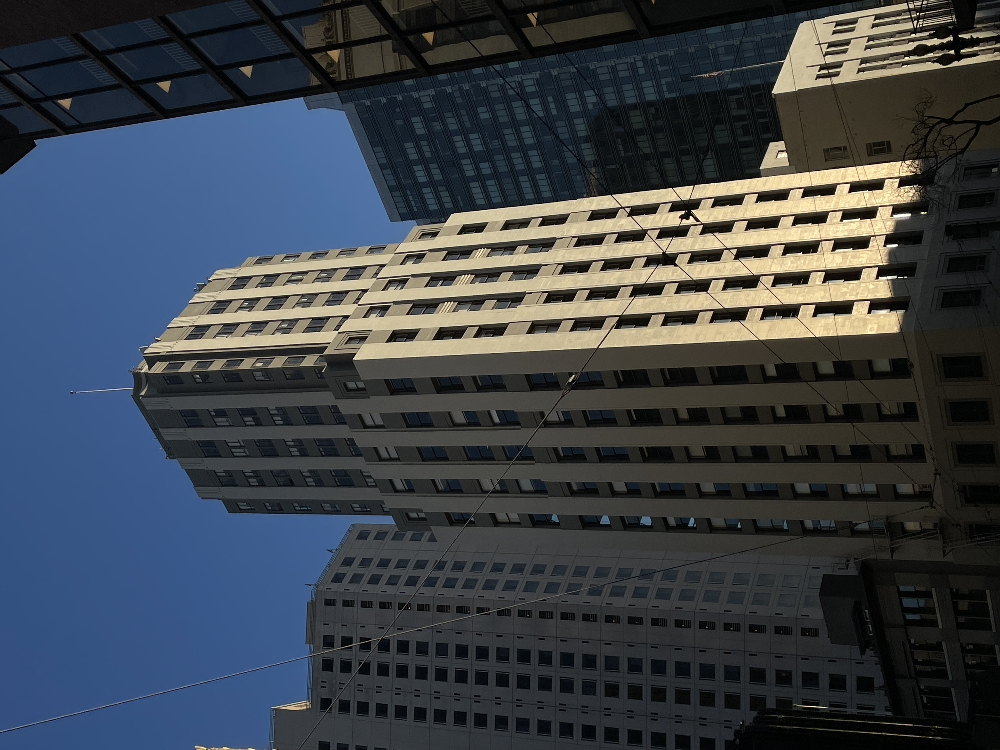
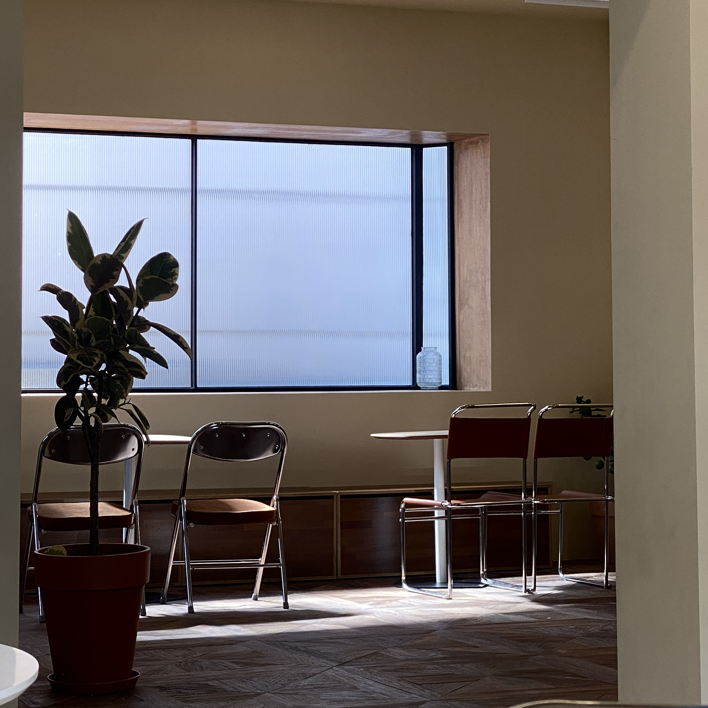
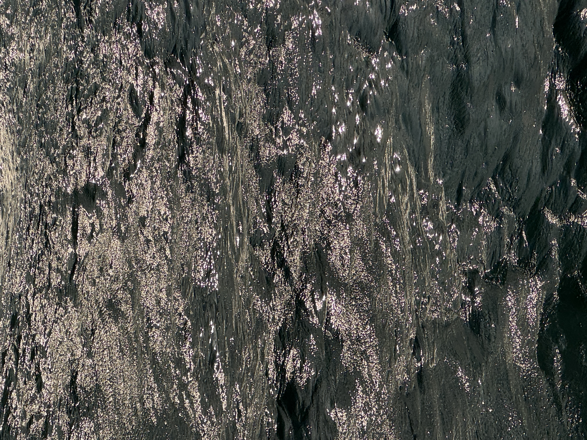
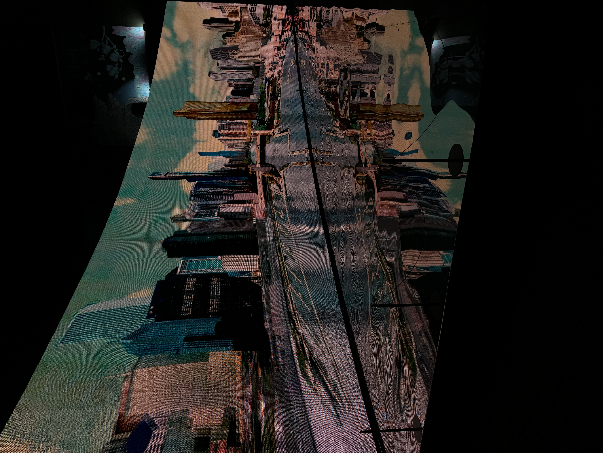
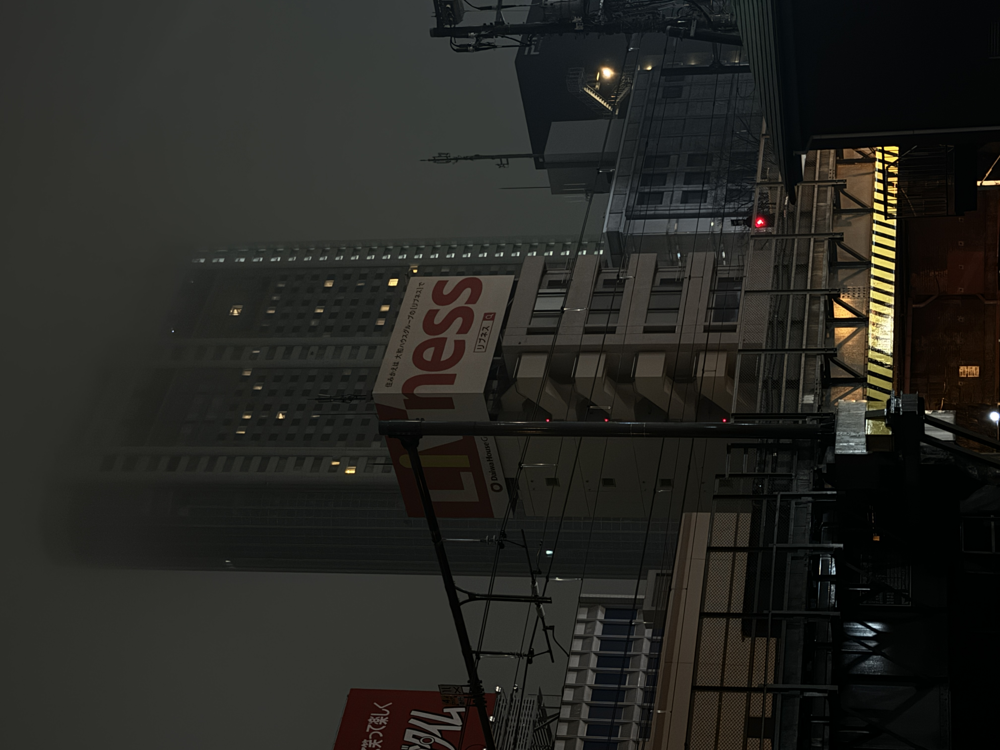
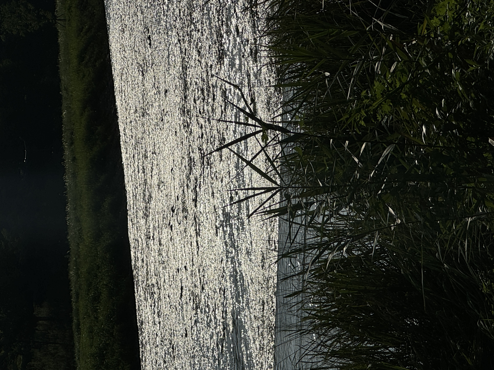
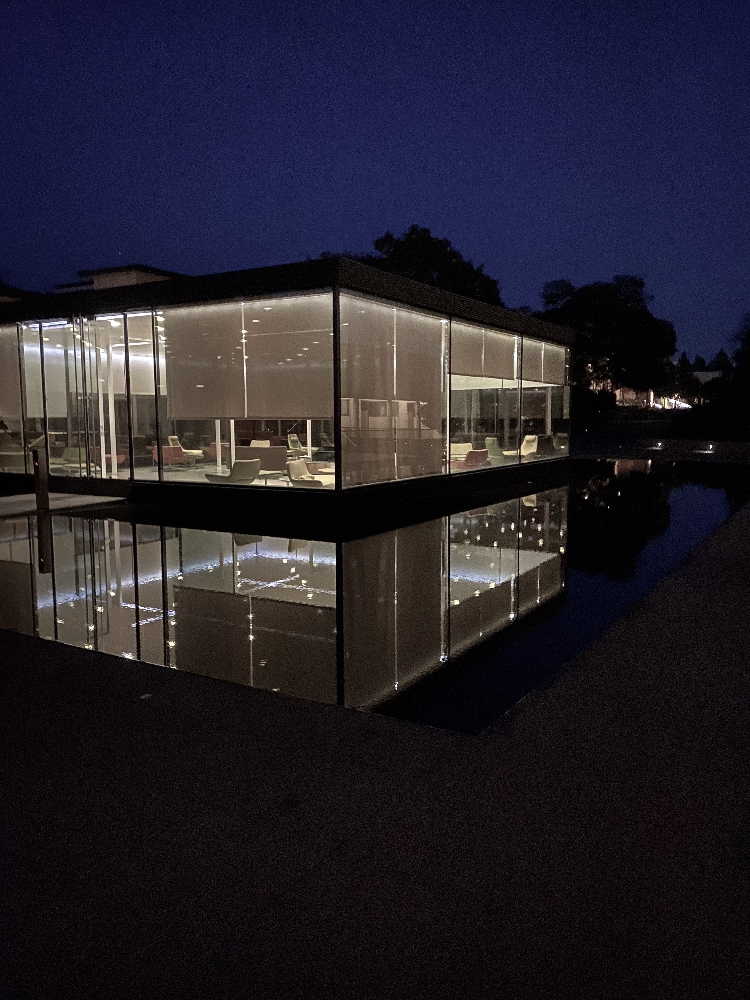
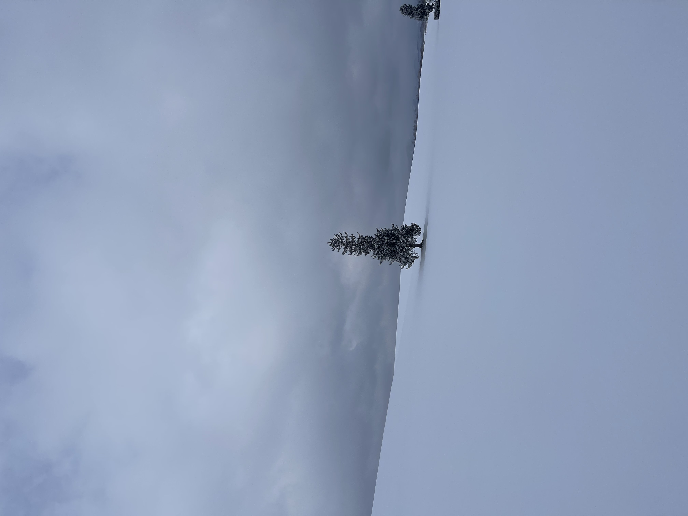
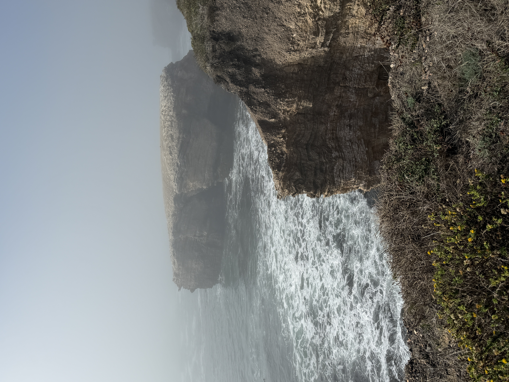

PHOTOGRAPHY · JUNHO CHOI
REC
PHOTOGRAPHY
PHOTOGRAPHY
PHOTOGRAPHY
Outside of academics, I spend my time photographing the places I visit, rating every cafe I can find, and rethinking how my room should look. This site is a collection of all of it — the things I study, the tools I build, and the stuff I care about. If anything here catches your eye, feel free to reach out.



People
City


Scenes
Scenes




Water


Sky


Nature


Moments

